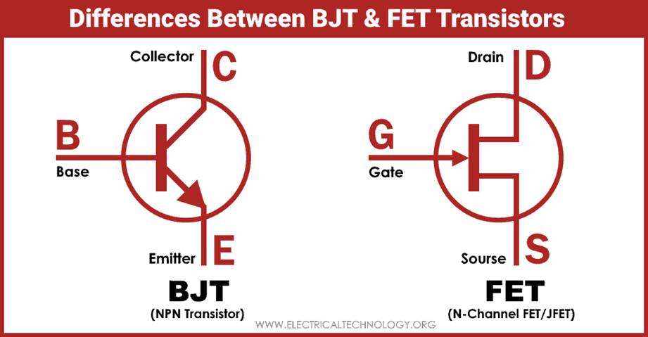
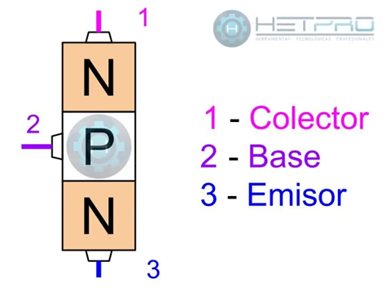
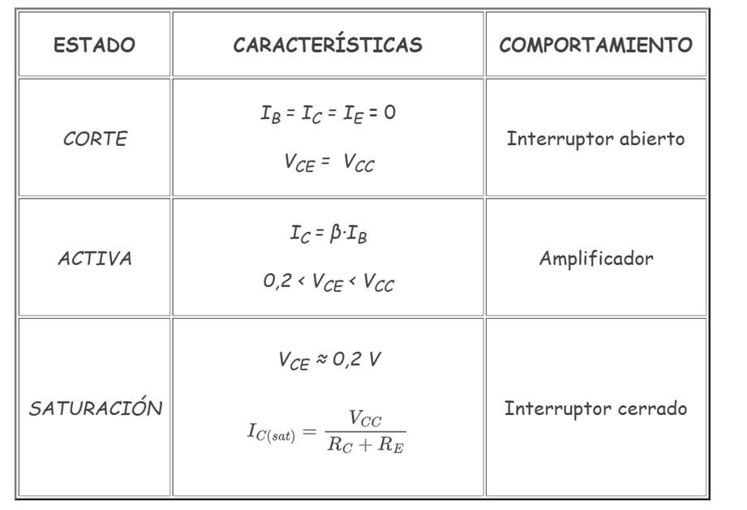

Circuitos Eléctricos
Peregrina Chavarría José Elías - Briseño Rodríguez Ivana Naomi
Transistor
¿Qué es?
Un **transistor** es un dispositivo que controla la corriente eléctrica actuando como **amplificador** o **interruptor**. Como amplificador, puede aumentar la salida eléctrica con una entrada pequeña. Como interruptor, puede alternar entre los estados de encendido y apagado para regular la corriente eléctrica. Estas capacidades lo hacen esencial para aplicaciones cotidianas, desde ordenadores hasta satélites espaciales.

¿Cómo funciona?
Cuando una **pequeña corriente** fluye a través de la **base**, controla el flujo de una corriente mucho mayor entre el **emisor** y el **colector**.
Esto sucede porque la unión base-emisor está polarizada directamente, lo que permite el flujo de electrones del emisor a la base. Aunque la unión base-colector está polarizada inversamente (actuando como barrera), la corriente en la base abre esta unión y permite que los electrones fluyan del emisor al colector. Este proceso permite que la base controle el flujo de corriente.
Función
Un transistor puede actuar en varias funciones clave:
¿Cuáles son los dos tipos principales de transistores?
BJT (Transistor Bipolar de Unión)
En un **BJT**, la unión base-emisor se polariza directamente con una pequeña corriente, permitiendo que los electrones fluyan del emisor a la base. La unión base-colector, inversamente polarizada, es superada por este flujo, creando una pequeña corriente entre colector y emisor que es controlada por la corriente de base.
FET (Transistor de Efecto de Campo)
En un **FET**, la terminal de **puerta** está aislada del **canal** (que conecta la **fuente** y el **drenaje**). Al aplicar un voltaje a la puerta, se crea un campo eléctrico que modifica la conductividad del canal, controlando así el flujo de corriente entre la fuente y el drenaje. Los FET tienen una **alta impedancia de entrada**, lo que significa que consumen muy poca corriente de la señal de entrada.
De esta forma, los transistores actúan como un interruptor o un amplificador, según cómo estén conectados y cuánta corriente los atraviese. La corriente de entrada controla la corriente de salida, lo que permite amplificar o conmutar señales.
HECHOS Y APLICACIONES (Transistor NPN)
El transistor **NPN** es un dispositivo electrónico compuesto por tres regiones semiconductoras inter-conectadas: **N-P-N**. Este elemento tiene tres pines de conexión y es **bipolar** (BJT). El material semiconductor puede funcionar como conductor o como aislante, de acuerdo con la polarización eléctrica.
Estructura de capas
El transistor NPN está compuesto por tres capas de materiales semiconductores (cristales de silicio o germanio) **dopados** de forma distinta:
Estructura interna

El transistor NPN tiene tres pines de conexión:
Una unión NP se le conoce también como **diodo**.
FASES DE OPERACIÓN
Un transistor puede estar en tres estados principales, que se entienden con el siguiente símil hidráulico:
1. Estado de Corte (Interruptor Abierto)
**Símil:** Si no hacemos nada en la tubería B, el tapón obstruye el paso de C a E.
**Transistor:** Si por la **Base no entra corriente**, el Colector y el Emisor están aislados. El transistor funciona como un **interruptor abierto**. Se utiliza en circuitos lógicos para representar un **cero** lógico (OFF).
2. Estado de Activa (Amplificador)
**Símil:** Si introducimos una **pequeña corriente** por B, el tapón se desplaza ligeramente, permitiendo el paso de corriente de C a E.
**Transistor:** Sí pasa corriente del Colector al Emisor, controlada por la Base. El transistor se comporta como un **amplificador**, multiplicando la corriente de base por un factor llamado **ganancia** ($\beta$ ó $h_{FE}$). Se utiliza para amplificar señales analógicas.
3. Estado de Saturación (Interruptor Cerrado)
**Símil:** Si se introduce una **corriente suficientemente grande** por B, se produce el completo desplazamiento del tapón, y C y E quedan comunicados por completo.
**Transistor:** El paso de corriente del C al E es el mayor posible. El transistor está funcionando como un **interruptor cerrado** (ON). Se utiliza en circuitos lógicos para representar un **uno** lógico.
| Estado | Función | Corriente de Base (IB) | Corriente de Colector (IC) |
|---|---|---|---|
| Corte | Interruptor Abierto (OFF) | IB = 0 | IC ≈ 0 |
| Activa | Amplificador | Pequeña | IC = β · IB |
| Saturación | Interruptor Cerrado (ON) | Grande | Máxima posible (IC sat) |
